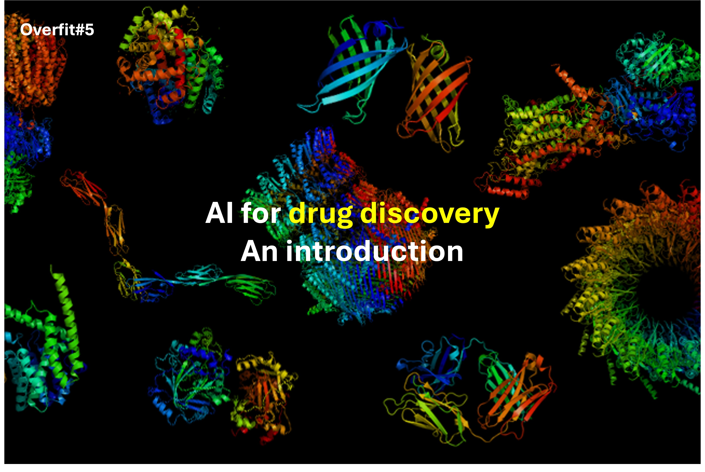
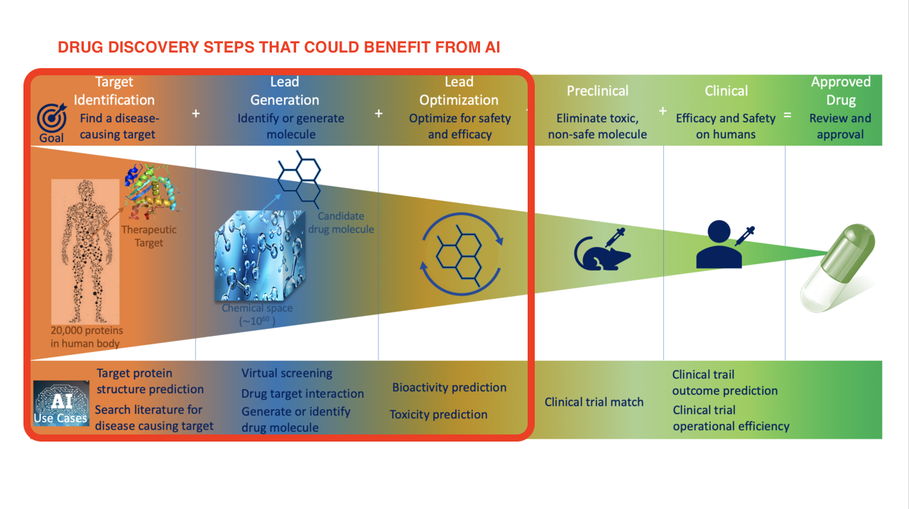
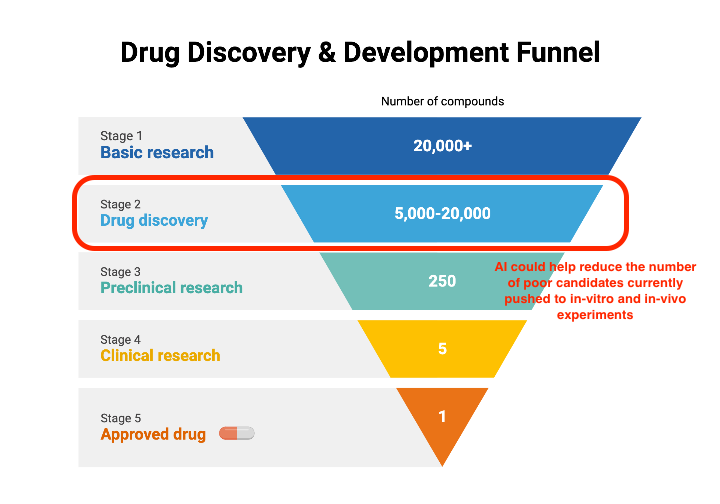
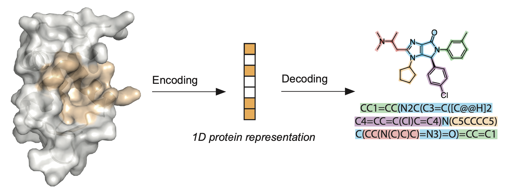
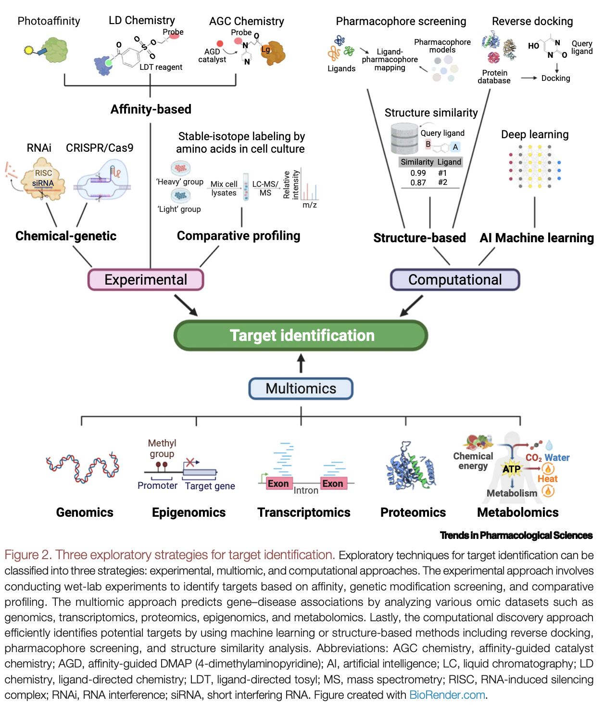

Overfit#5: AI for drug discovery: An introduction

Table of content
- The broken market of drug discovery
- AI can improve the drug success ratio
- The main applications of AI in drug discovery
The broken market of drug discovery
Bringing a new medicine to market is a tedious process that often spans over a decade. In fact, despite the considerable efforts (and money 💸) invested, only a handful of drug candidates manage to progress to the final stage of development, resulting in a significant waste of resources and time.
According to J. Wouters (2020), the R&D investment needed to bring a new medicine to market doubled in the last decade, with recent estimates ranging from $314 million to $2.8 billion.
These massive costs were mainly due to the very low success rate of drug candidates in the preclinical and clinical phases. Pharmaceutical companies are thus looking for new techniques to better distinguish "good" candidate molecules (specific, efficient, cheap, hydrophilic) from "poor" ones (toxic, unspecific).

AI can improve the drug success ratio
Decades of research have built up substantial datasets of molecules and proteins. By leveraging this data, the players of the pharmaceutical industry envision to predict the outcome of wet lab experiments ... in silico.
🧪 Searching drug candidates using algorithms is referred to in silico, in opposition to the traditional in vitro/in vivo approach, that relies on wet lab experiments.
Computational biology is nothing new. Why is AI a game-changer?
For years, computational biologists have used physics-driven simulations to predict the properties of molecules and proteins. These simulations involve solving complex quantum mechanics equations, which is a time-consuming and high-computation task: it would take years to screen the whole database of compounds to find the best candidate for a single target protein.
With AI, drug discovery moves from a physics-driven approach to a data-driven approach. Using the available datasets, one can train models to implicitly learn the physics. Once trained on the millions of known molecules, neural networks give a rough estimation of how promising a molecule is, at a fraction of the time needed with the traditional methods.
Data-driven approaches unlock screening capabilities at scale. First, run a fast data-driven algorithm to filter a curated list of promising compounds. Then, run a slower and more precise physics-based algorithm to guess the best pick.
Approach Accuracy Inference speed Physics-driven ✅ Accurate ❌ Slow Data-driven ❌ Less precise ✅ Fast

The main applications of AI in drug discovery
Now that we covered the competitive edge of AI, let's see how AI could accelerate research, with tangible examples12.
Since the beginning of this post, I introduced in-silico drug discovery as a monolithic task. Yet, in practice, it is a multi-step process. The first challenge is to get a fine-grained knowledge of how the disease works, to then choose the best step in the biological process to act on. Next, we need to find a molecule that binds properly to the target protein. Finally, we need to double-check for potential side effects of the compound.
🔎 Hopefully, AI has the potential to accelerate each of these tasks. Let's zoom into the most relevant ones!
Molecular property prediction
🧪 Given a molecule, predict its properties (solubility, toxicity ...)
This is maybe the most straightforward problem. It is fairly easy to turn this task into a Machine Learning formulation.
First, we need a vectorial representation of the molecule, i.e. we embed the molecule in a latent space, usually with a Graph Neural Network (GNN). Starting from this embedding, we then perform a graph-level classification (ex. toxic/not toxic) or regression (ex. solubility), using a fully-connected neural net.
Molecular property prediction is usually performed over large datasets. This process is called virtual screening. A good-performing property prediction model could discover new drugs, or new properties to existing drugs.

De novo drug design
🪄 The inverse of property prediction. Given some desired properties, generate a molecule with these properties.
De novo drug design is essentially GenAI but for molecules (🤯). You give a wishlist as input and get a molecule as output.
Depending on how you condition the generation, you can create really interesting models. For instance, if you condition the generation with the active site of a protein, you can then generate promising candidates for this target.
To my mind, this is the most fascinating and thrilling of all tasks, because it enables us to discover drug patterns, unknown to date, that can then be studied and improved by biologists and chemists.

Binding site/interface prediction
🧬 Given a protein, guess where its active site is.
Just as some parts of our skin are more sensitive to touch than others, proteins have their "sensitive spots" called active sites. These are precise regions where molecules bind and reactions happen, essential for the protein's function.
Guessing where the active site lies is key because it conditions all the downstream tasks. The better we understand the target protein, the easier it is to find a relevant ligand to bind to its active site.
From an ML point of view, if we used Graph Neural Networks, this task could be a node-level classification problem.

Molecular docking
⚓️ Given a protein and a ligand (small molecule), predict the way they twist to fit one inside the other (their conformation).
To fit together, the protein's and the ligand's atoms move to minimize the energy of the whole system (protein+ligand). The lower the energy, the more stable the structure, and the better the match.
This task seems like a simple optimization problem. Yet, the issue is the huge dimension of the problem, as each atom adds some degrees of freedom.
AI usually performs better than gradient methods at these huge inverse problems. A good example is the AlphaFold deep learning model from Google DeepMind, which solved the protein folding problem. AI could thus help rank poses.

Target identification
🎯 Given a disease, find the right biological process to target. Usually, a protein to activate or inhibit.
Last on my list, but usually the first step of the drug discovery journey. Target identification is the task of defining the protein to target to stop the disease.
Most of the time, a disease is the cause of a sequence of protein activations in our cells. To stop a disease, we need to find the most relevant step of the process to act on. It usually means finding the protein to activate or inhibit, that has little impact on other processes in the human body. This is to avoid side-effects, that are not a great property of a drug, to be honest.
Thanks to its pattern recognition capabilities, AI could help in the identification of relevant proteins to target. AI enables to better analyze multiomics data and is a bridge between the various modalities. It is thus a promising tool to identify better targets (i.e. better problems) to then find better drugs (i.e. solutions to those problems).

To sum up ...
Drug discovery companies are working on each of these topics, building end-to-end pipelines to validate new chemical compounds. With these pipelines, they scrap the database of known molecules and seek promising candidates ...
Challenges and limitations
- Data is the limit To train their models, researchers use open databases of all the known molecules and proteins to date. Yet these databases are expensive to expand and biased towards some types of molecules.
- The feedback loop with the wet labs is slow It takes years to validate a new drug. Only time will tell if all the investments in the field were worth it, or just a dead-end.
- Misuses It is pretty straightforward to use AI to generate molecules that harm (poisons) rather than molecules that cure. As always, AI is ambivalent.
Conclusion
This is the end of our little journey at the intersection of AI and biology. I hope you enjoyed it! 🧪
As model architectures tailored for Computer Vision (ResNets) and NLP (RNN, Transformers) flourished in the last decade, I am convinced that new architectures are developing to crack these problems. I am especially curious about architectures that ensure rotation and translation invariances (SE3).
I plan to post on this topic in future posts. More on that soon. So, stay connected! 👋
-
Clemens Isert, Kenneth Atz, Gisbert Schneider, "Structure-based drug design with geometric deep learning" (2022): A survey of existing algorithms for each of the 4 problems. ↩
-
Frank W. Pun, Ivan V. Ozerov, Alex Zhavoronkov, "AI-powered therapeutic target discovery" (2023) ↩